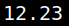

5.5 Sudo permissions of user robert
1. Look at the ‘sudo’ permissions of “robert” user.
robert@dejavu
:
~$
sudo
-l
Output:
You can run “exiftool” as user “robert”.
2. Look at the “exiftool” version.
robert@dejavu
:
~$ exiftool -ver
Output:

Index